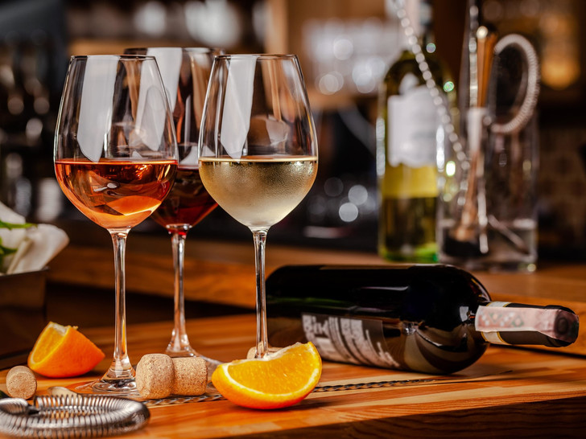
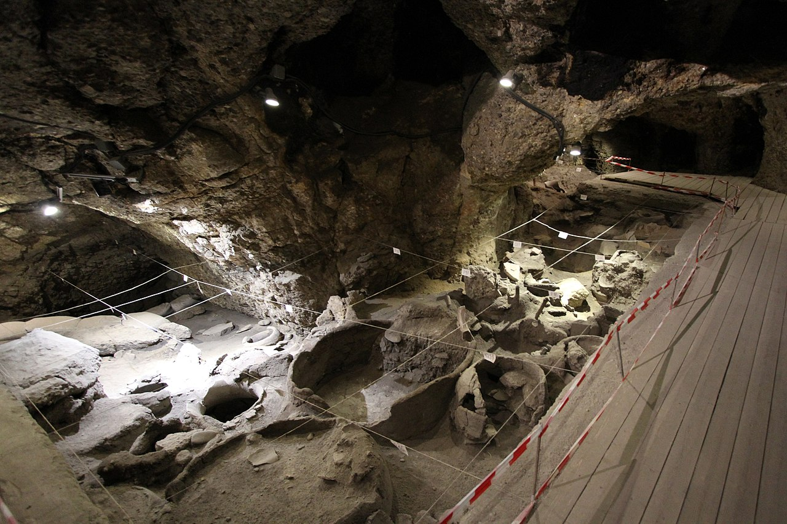

Вино.
Вино́ — алкогольный напиток,
полученный путём полного или частичного
сбраживания свежего винограда,
дроблёного или нет, или виноградного
сусла.

Немного об истории вина.
На сегодняшний день существует достаточно стройная система
археологических свидетельств, говорящих в пользу того, что вино
производили в регионах Кавказа и Закавказья уже в VI тысячелетии до
нашей эры.
Люди древней культуры Шулавери-Шому, распространённой на территории
современных Грузии, Армении, Турции и Азербайджана, оставили после себя
глиняные емкости, на стенках которых находился налёт, химический анализ
которого подтвердил хранение в них перебродившего виноградного сока.
Жозе Вуйямо , швейцарский исследователь сортов винограда и соавтор
известного винного критика Дженсис Робинсон по книге Wine Grapes, с
помощью ампелографического анализа обнаружил в юго-восточной Анатолии
(территории современной Турции) следы одомашнивания древними людьми
диких сортов винограда.
В Армении же в пещере Арени-I была найдена наиболее древняя из известных
нам сегодня винодельня, относящаяся к IV тысячелетию до нашей эры.
Все эти открытия позволяют говорить о том, что именно территорию
Закавказья, Восточную Анатолию, а также междуречье рек Тигр и Евфрат,
можно считать колыбелью виноделия.

Моё мнение о винных изделиях.
Хорошее вино - одно из самых лучших завершений сложного дня.
Мой фаворит это J.Moreau & Fils Chablis
Интерес к винным изделиям пояивился когда
я посетила винодельню в Италии.
Если хотите открыть для себя новый вкус удовольствия
можете прочитать описание этого вина,
может вам понравится (сслыка ниже)
да,здесь
Хотите продегустировать хорошее вино со мной,
можете написать мне в инст,
телеграм или же позвонить
inst: ksmv.ezz
telegram: @imtherealsIimshady
number: +998998164064